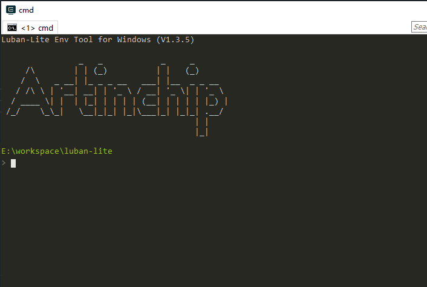
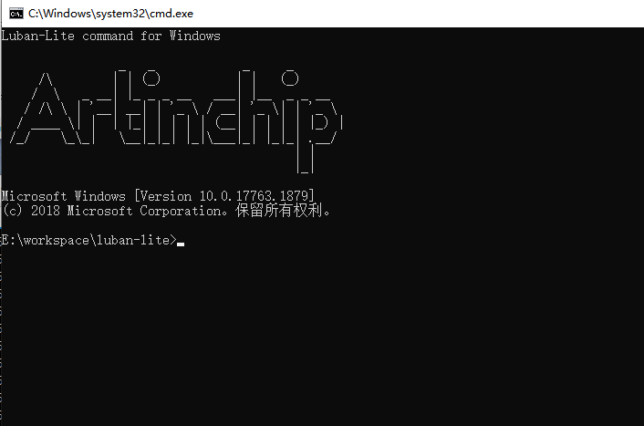
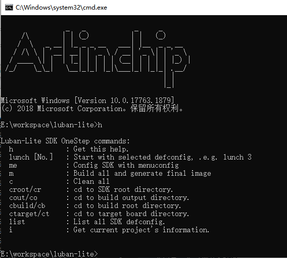

1.3. Windows¶
1.3.1. 环境安装¶
Baremetal SDK 采用了 scons 作为编译框架的基础语言，Windows 下的对应的各种工具已经存放在 baremetal/tools/env 目录当中，不需要安装
1.3.2. 使用方法¶
在 SDK 根目录下有两个批处理文件来实现命令行的使用方法。
1.3.2.1. ENV 运行环境¶
直接双击 baremetal/win_env.bat 打开专有的 Windows 的 env 命令行工具，后面所有命令都在该命令行工具中进行操作
ENV 是推荐的一种的环境变量设置方式，集成了编译所需要使用的所有的工具

1.3.2.2. CMD 运行环境¶
直接双击 baremetal/win_cmd.bat 打开 Windows 的 CMD 命令行工具，后面所有命令的使用和 ENV 相同

CMD 是 windows 的使用环境，除了 SDK 的命令外，还可以使用系统自己安装的工具的命令，因此功能更强大
1.3.2.3. 工程加载¶
在编译一个工程之前，首先需要加载工程的现有配置：
$ cd baremetal
$ scons --list-def // 列出当前所有的工程默认配置
$ scons --apply-def=xxx_defconfig // 加载应用上述列表其中一条工程配置
和工程相关的命令还有：
$ scons --save-def // 手工保存当前工程配置
$ scons --info // 列出当前工程的基本配置
1.3.2.4. 配置¶
在加载完工程配置后，可以使用 menuconfig 命令来修改当前配置：
$ cd baremetal
$ scons --menuconfig // Linux 命令行下启动 Menuconfig
$ .... // Menuconfig 配置过程
1.3.2.5. 编译¶
配置完成后，可以使用以下的命令进行编译：
$ cd baremetal
$ scons // 编译当前工程，简洁输出
$ scons --verbose // 编译当前工程，详细输出
$ scons -c // 清理当前工程
$ ls output/$chip_$board_$kernel_$app/images/$soc.elf // 编译生成的目标文件
1.3.3. OneStep¶
OneStep 是 ArtInChip 对 scons 工具的二次封装的总称，在基础命令上开发了一组更高效和方便的快捷命令， 以达到任意目录、只需一步的目的。
在 CMD 或者 ENV 窗口启动后，OneStep 命令已经生效，在其中可以从任意目录执行以下命令，包括:
lunch - 选择方案
m - 编译SDK
c - clean SDK
me - 打开 menuconfig 进行配置
